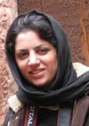
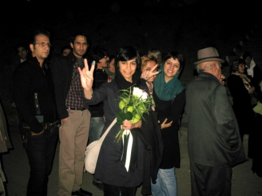
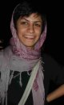

|
|
|
Browsing
Contact Us |
Campaigners |
Face to Face |
Tribune |
Interview |
News |
On the Web |
One Million |
Report
Farsi | Français | German | Italian | Spanish | العربية Also in this section
|
 Raha Asgarizadeh and Vahideh Molavi Released on Third Party GuaranteeMonday 9 November 2009 Change for Equality: November 12, 2009 Raha Asgarizadeha and Vahideh Molavi women’s rights defenders and activists in the One Million Signatures Campaign, were released yesterday November 11, 2009 on a third party guarantee of 5 million tomans (approximately $5,000). The two women’s rights activists were arrested in protests on November 4, in commemoration of the thirtieth anniversary of the seizure of the American Embassy in Tehran, during which citizens also took to the street in the continuation of protests against the results of the disputed presidential elections in June 2009. They were initially taken to a detention center in the mid Tehran, then to Vozara detention center and then to Evin along with 38 other women arrested in relation to the protests. They were released after 8 days in prison.
 Raha Asgarizadeh explained that following her arrest at Vozara Detention Center she was charged with disruption of public order and collusion and gathering with the intent to endanger national security. Vahideh Molavi was charged with disruption of public order. Most of those in detention along with Raha and Vahideh have been released. Raha and Vahideh were released on November 11, 2009 along with ten other women. Sanaz Ghafari another social activist remains in prison along with a few other women, pending the posting of bail, but it is anticipated that they will be released soon. Raha Asgarizadeh and Vahideh Molavi Women’s Rights Defenders and Campaign Activists Arrested Change for Equality: November 9, 2009 Raha Asgarizadeh a member of the Campaign in Tehran was arrested on Wednesday November 4, 2009 and remains in detention in Evin Prison. Vahideh Molavi a women’s rights activist also involved in the Campaign was arrested on the same day. In a phone call to members of the site of Change for Equality, Raha explained that she and Vahideh, along with several others arrested on November 4 were being held in Evin prison in a special ward, known as the Methadone Ward, where they are isolated and have no contact with ordinary prisoners. She further explained that she was arrested while passing through the Artists’ House Park, in Tehran by security forces in a violent manner, who proceeded to handcuff and blindfold her and transfer her to a detention center nearby, then to Vozara detention center and later to Evin prison. Raha explained that 40 women were initially in detention with her, who had been arrested during the protests which were intended to mark the 30th anniversary of the seizure of the American Embassy. Seventeen of the women were released the first night and two were released the second night. Despite the fact that Raha’s family had been told that she too would be released on a third party guarantee, today court officials announced that a temporary arrest order was issued in her case as the case required further investigation. In this respect Raha Explained that: “I signed a release order that was issued contingent on a third party guarantee when in Vozara detention center the first night of my arrest. Still until today, I had hoped and anticipated that I would be released on the third party guarantee, but today court officials informed my family that a temporary arrest order had been issued in my case and that my case had been referred to the fourth security branch of the Revolutionary Courts.” According to Raha a temporary arrest order has been issued for her, Vahideh Molavi and Sanaz Ghafouri another imprisoned social activist. These cases too have been referred to the 4th Security Branch of the Revolutionary Courts for further investigation.
 Vahideh Molavi is a women’s rights and student activist who is active in the Campaign and also works with the Meydaan website. According to her sister, Vahideh was detained twice on November 4. While she was let go the first time, the second time she was arrested on Bahar Shiraz Avenue in Tehran and taken into custody. |